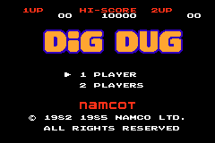

Famicom Mini 16 - Dig Dug (Japan)
EEPROM 64K Save Format Spec gbakit Built-In 💾 MultiBoot 🎮 4P Link 📡 Wireless
Cartridge Identity
- Game Code
FDDJ(FamilyFDD)- Header Title
DIG DUG- Maker / Revision
01/ rev0- ROM Size
- 1.0 MiB (1,048,576 B)
- Save Media
EEPROM 64K- SHA-256
9a7acb4a1d48fc3478724b0680265aee89c2835139e69b0d1a09a6a8e6a9b55d
Screenshots


Niche & Rare Accessories
Detected niche/rare GBA accessory support: 🔌 Wireless Adapter (RFU_V1023).
Full 343-ROM corpus breakdown in the Cartridge Hardware & Niche Accessories Reference · auto-detected from ROM bytes via
gbakit inspect.
- Wireless Adapter (RFU_V1023)
- Nintendo Wireless Adapter (
AGB-015) SDKRFU_V1023+RFU-MBOOT
Link Cable & Multiplayer Communications
This title contains detected communication capabilities: 💾 MultiBoot 🎮 4P Link 📡 Wireless.
Detailed protocol specifications, SIO registers, Joybus commands, and MultiBoot sequences are documented in the Link & Multiplayer Reference.
- Multi-Player SIO (4P)
- 16-bit ring network · SIOCNT (
0x04000128) literals:0x00587c,0x005bec,0x005d44· SIODATA32/SIOMULTI0 (0x04000120) literals:0x000f00,0x005b90,0x005e6c - Nintendo Wireless Adapter
- AGB-015 RFU driver signature
RFU-MBOOTat offset0x0063bc - Nintendo Wireless Adapter
- AGB-015 RFU driver signature
RFU-MBOOTat offset0x01c7b4 - Nintendo Wireless Adapter
- AGB-015 RFU driver signature
RFU-MBOOTat offset0x020ce4 - Nintendo Wireless Adapter
- AGB-015 RFU driver signature
NINTENDOSio32IDat offset0x0063c8 - Nintendo Wireless Adapter
- AGB-015 RFU driver signature
NINTENDOSio32IDat offset0x020cf0 - Single-Cart MultiBoot
- Single-Cartridge MultiBoot (Download Play) client/server handler · Thumb SWI 0x25 (
0xDF25):0x000966,0x0575ba,0x06b118,0x08af48· SDK signatures:MBOOTat0x0063c0
Battery Save Format Specification
Open Full Save Format SpecDownload save-format.json
- Specification Coverage
- 4 mapped fields · 0 verified checksum(s) · Confidence: HIGH
- gbakit Built-In Support
- Built-in (FDDJ)
gbakit save verify FDDJ save.sav
gbakit save decode FDDJ save.sav
gbakit save fix FDDJ damaged.sav -o repaired.savObserved Battery Save Layout
- Fill Byte & Active Size
0x00fill · 512–512 / 8,192 B active (entropy 0.16 bits/B)- Active Offset Ranges
0x0–0x1FF(1 total)- ASCII Magic / Headers
UDGIW- Observed Variable Regions
- 0 bytes across 0 spans: None
- Candidate Checksum/Counter Spans
- None
Asset Map (formatkit.asset-map.v1)
Download FDDJ-r0-9a7acb4a1d48fc34.asset-map.json.gz (2,488 B (2.4 KiB)) Verified PASS · 25.25% coverage
| Metric | Bytes / Value | Entries |
|---|---|---|
| Identified | 264,736 B (258.5 KiB) (25.25%) | 17 |
| Mapped | 0 B (0.00%) | 0 |
| Opaque | 0 B (0.00%) | 0 |
| Unknown | 783,840 B (765.5 KiB) (74.75%) | 17 |
| Total ROM Size | 1,048,576 B (1.00 MiB) | 34 |
| Coverage % | 25.25% | — |
| Entries w/ Code Refs | 15 / 34 (44.12%) | — |
Top Identified Formats: rom.multiboot (1 · 262,144 B (256.0 KiB)) · gfx.gba-palette (15 · 2,400 B (2.3 KiB)) · gba.rom-header (1 · 192 B)
Largest unknown Extents (Headerless / Custom Asset Candidates)
| Offset | Size | Shannon Entropy | Code Refs |
|---|---|---|---|
0x000600F8 | 655,112 B (639.8 KiB) | 8.000 bits/B | 0 |
0x000097B8 | 48,988 B (47.8 KiB) | 5.477 bits/B | 0 |
0x00055714 | 42,980 B (42.0 KiB) | 7.998 bits/B | 0 |
0x00005290 | 17,192 B (16.8 KiB) | 4.183 bits/B | 0 |
0x00001234 | 6,812 B (6.7 KiB) | 6.033 bits/B | 0 |
gzip -dk FDDJ-r0-9a7acb4a1d48fc34.asset-map.json.gz && gbakit map verify rom.gba FDDJ-r0-9a7acb4a1d48fc34.asset-map.json
gbakit assets export rom.gba --asset-map FDDJ-r0-9a7acb4a1d48fc34.asset-map.json -o out/Text, Fonts & Scene Data
- Primary Text Encoding
- Compressed / custom-encoded text
- Font & VWF Indicators
- No VWF Table No 1bpp Font · BIOS SWIs: BitUnPack
0x10:14· LZ770x11/12:17· Huffman0x13:8· RLE0x14/15:24 - Scene & Packaging
0ROM pointer tables (≥32 entries,0≥200) ·0relativeu32TOCs ·63OAM metasprite hits